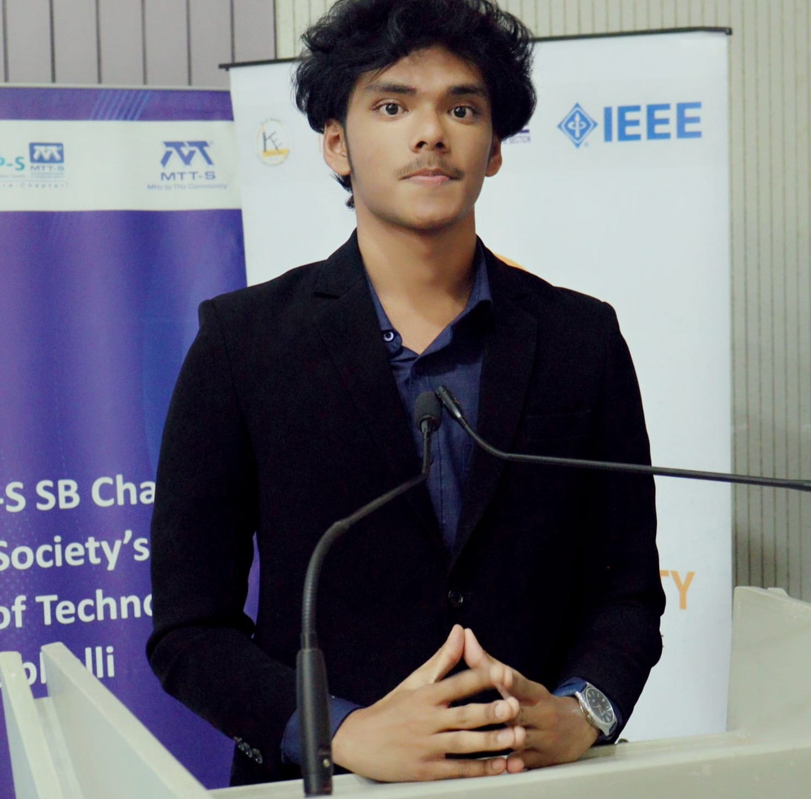

A DIGITAL PRACTICE BY
AFTAB
SAYED.
01—
04
IDEAS
IN
PROGRESS
IN
PROGRESS
01 / INTRODUCTIONTHE PERSON BEHIND THE PIXELS

FIG. 01 — AFTAB AHMAD SAYEDHUBLI, INDIA
HELLO, WORLD.
I make
things mean
something.
Hey guys, this is Aftab. I hope you get to know me through this website. Thank you very much for visiting. I’m a Computer Science Engineering student in Hubli, Karnataka.
A LITTLE MORE ABOUT ME ↗A NOTE TO SELF — 001
MAKE ROOM
FOR WONDER✳
02 / SELECTED WORKVIEW ALL PROJECTS ↗
 01 / PARKING AUTOMATION
01 / PARKING AUTOMATION01↗
LUXURY PARKING
A parking automation app built across the front end and back end.